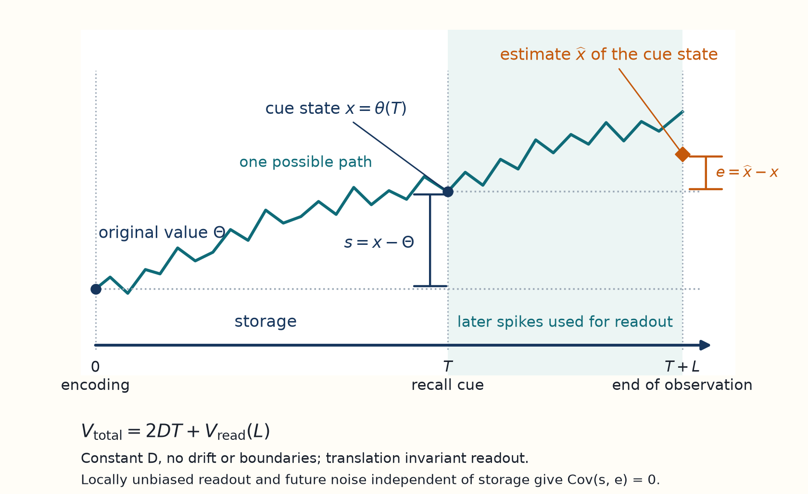
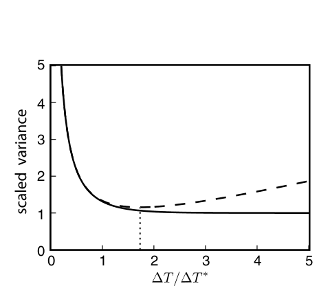
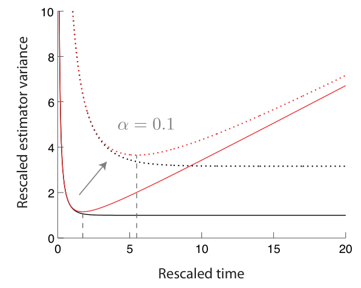
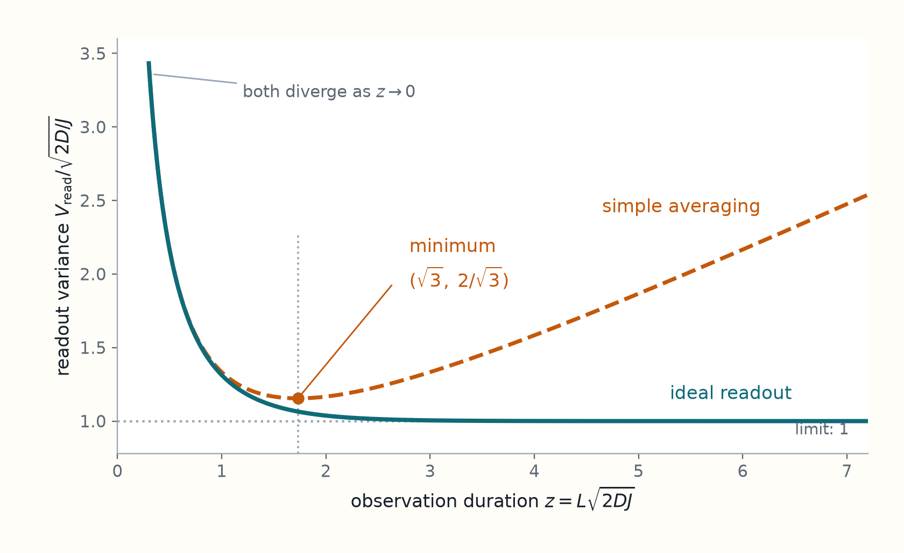

6 Readout accuracy depends on how a moving memory is observed
Reading spikes from a memory circuit takes time, during which its stored value can keep changing. This chapter calculates how much longer observation can help recover the value present at a recall cue, and explains why it cannot recover every earlier random displacement.
[Paper 2012] Burak and Fiete ask how long an observer should collect spikes when reading a memory that keeps diffusing. For their ideal observer, the characteristic observation time is \(L^*=1/\sqrt{2DJ}\le\tau\): \(D\) is the memory diffusion coefficient, \(J\) is the spike information rate and \(\tau\) is the synaptic time constant. Readout variance continues to fall with observation time but approaches the limit \(\sqrt{2D/J}\). The inequality for \(L^*\) follows from the information–diffusion bound and assumes full access to the spikes. The authors state the result in “Optimal Observation Time for Memory Readout,” PDF p. 4, and develop it in supporting text section VI.
[Derivation: useful observation time] Let \(L\) be time spent observing after the recall cue, and let \(P(L)\) be the precision, the reciprocal of the variance, of the ideal estimate of the state at that cue. In the local Gaussian approximation, take \(D\) and \(J\) as constant and assume that the future state increments and observation errors are independent. With no informative prior, \(P(0)=0\). Over a short bin \(h\), state diffusion adds variance \(2Dh\) when the later information is carried back to the earlier state, while the bin’s spikes add precision \(Jh\). Thus
\[ P(L+h)=Jh+\frac{P(L)}{1+2DhP(L)},\qquad \frac{dP}{dL}=J-2DP^2. \]
Separating variables and using \(P(0)=0\) gives
\[ P(L)=\sqrt{J/(2D)}\,\tanh(\sqrt{2DJ}L). \]
Its reciprocal is the readout variance, \(\sqrt{2D/J}\,\coth(\sqrt{2DJ}L)\), with \(\tanh z=(e^z-e^{-z})/(e^z+e^{-z})\) and \(\coth z=1/\tanh z\). The argument of \(\tanh\) becomes one at \(L^*=1/\sqrt{2DJ}\); the information–diffusion bound \(2DJ\ge\tau^{-2}\) then gives \(L^*\le\tau\). The sections below derive the recursion and its assumptions step by step.
[Interpretation] When a recall cue arrives, the stored value has already moved. Later spikes can help estimate the value present at that cue, but they cannot reveal the particular random displacements that occurred before it. Waiting for more spikes also allows the network to move further. The question is how much observation helps when the value being read keeps changing.
[Background: the readout problem] Separate the error accumulated during storage from the error of reading the cue state. We first derive the ideal observer’s limit, then examine the equal-weight observer and partial spike access. Finally, we compare the results with the paper’s printed error claim.
As before, the memory coordinate is \(\theta\), its initial value is \(\Theta\), and its displacement variance is \(2Dt\) for constant diffusion coefficient \(D\) without boundaries or systematic drift. The storage delay \(T\) ends at the recall cue. The observation interval \(L\) begins there. The spike information rate \(J\) measures how clearly nearby present states can be distinguished, and \(\tau\) is the basic model’s common synaptic time constant.
6.1 Optimal Observation Time for Memory Readout: separating storage and readout error
[Paper 2012] The readout section, main PDF p. 4, starts with an initial value \(\Theta\), a storage delay \(T\), and an observer who samples spikes for duration \(L\) after the recall cue. For the locally translation-invariant model with constant \(D\) and independent future fluctuations, the total estimation variance separates as \(V_{\mathrm{total}}(T,L)=2DT+V_{\mathrm{read}}(L)\). The first term is the variance of displacement accumulated before the cue; the second is the error in estimating the state present at the cue from the later spikes. The supporting text, section VI, PDF pp. 12–13, derives this decomposition; the discussion spells out the conditions below.
[Interpretation] At time \(T\), a recall cue arrives. The observer must estimate the original value \(\Theta\), but only has access to future spikes. The network has already diffused during storage.
[Paper 2012] To solve the readout problem, the supplement approximates the likelihood for the state in each short bin of duration \(h\) by a Gaussian with variance \(1/(Jh)\) (supporting text, PDF p. 13). Here \(J\) is the information rate of the observed spike population. The approximation requires an informative spike sample, not literally infinitely many independent observations in an arbitrarily short physical bin.
[Derivation] Let \(x=\theta(T)\) and index subsequent bins by \(k\), starting with \(\theta_0=x\). The increment \(\eta_k\) is the change in the stored value between bins. The observation \(y_k\) summarizes the bin’s population spikes as an estimate of \(\theta_k\), and \(\epsilon_k\) is its estimation error. In this approximation, these increments and errors are independent, zero-mean Gaussian variables. This treats the noise moving the state as separate from the noise in the observed counts, excluding the dependence that can arise when the same spikes both change recurrent activation and supply the observation. The equivalent observation model is
\[ \theta_{k+1}=\theta_k+\eta_k, \qquad y_k=\theta_k+\epsilon_k, \]
\[ \operatorname{Var}(\eta_k)=2Dh, \qquad \operatorname{Var}(\epsilon_k)=\frac1{Jh}. \]
[Interpretation] The value \(y_k\) is inferred from spikes, not an additional directly measured physical coordinate. The continuous limit is a convenient mathematical description of the many spike, weak fluctuation regime. It does not assert that an arbitrarily short physical bin already contains enough spikes for a Gaussian fit. The derivations below are exact within this local Gaussian readout model.1
[Derivation] For an unbounded coordinate with constant \(D\) and no drift, let \(x=\theta(T)\) and let \(\widehat x\) estimate that state from later spikes. Write the storage displacement as \(s=x-\Theta\) and the readout error as \(e=\widehat x-x\). In this section \(s\) denotes a scalar displacement, not the synaptic activation \(s_i\). The total recall error is their sum:
\[ \widehat x-\Theta=s+e,\qquad \operatorname{Var}(s+e)=\operatorname{Var}(s)+\operatorname{Var}(e) +2\operatorname{Cov}(s,e). \]
Assume the readout is locally unbiased at every possible \(x\) and the future noise is independent of the storage history. Conditional on that history, the readout error then has mean zero. Since \(s\) is fixed by the history,
\[ \mathbb E[se]=\mathbb E[s\,\mathbb E(e\mid\text{storage history})]=0. \]
Both errors have zero mean, so their covariance vanishes. In this readout model, translation invariance means that shifting the represented value does not change the statistics of the readout error. Its variance is therefore the same at every \(x\). Denote it by \(V_{\mathrm{read}}(L)\). Using \(\operatorname{Var}(s)=2DT\) gives
\[ V_{\mathrm{total}}(T,L)=2DT+V_{\mathrm{read}}(L). \]
[Interpretation] The two terms describe different sources of error:
- \(2DT\) comes from storage.
- \(V_{\mathrm{read}}(L)\) concerns estimation of \(\theta(T)\) from spikes after \(T\).
[Paper 2012] The supplement’s decomposition is \(V_{\mathrm{total}}(T,L)=2DT+V_{\mathrm{read}}(L)\) in the locally translation-invariant diffusion and readout model. It separates the mean squared displacement before the cue from the subsequent estimator variance; the calculation above states the assumptions that make the cross term vanish.2
[Interpretation: assumptions] State dependence, boundaries, informative priors, or uncertain initial encoding require corresponding changes.
A timeline separates the displacement accumulated before the cue from the error in estimating the cue state afterward.

6.2 Accounting for diffusion makes readout improve toward a limit
[Paper 2012] Main Eq. 5 and Fig. 3, PDF p. 4, describe the ideal observer’s characteristic observation time and diminishing gains from further spikes. For the local Gaussian readout model, the finite-interval readout variance and its characteristic time are
\[ V_{\mathrm{ideal}}(L)=\sqrt{\frac{2D}{J}}\,\coth\!\left(\sqrt{2DJ}\,L\right), \qquad L^*=\frac{1}{\sqrt{2DJ}}\leq\tau. \]
Here \(L\) is the observation duration after the cue, \(D\) is the memory diffusion coefficient, \(J\) is the spike information rate and \(\tau\) is the synaptic time constant. \(V_{\mathrm{ideal}}\) is the variance of estimating the state at the cue, excluding earlier storage error. As \(L\) grows, it approaches \(\sqrt{2D/J}\); \(L^*\) is a scale of approach, not a sharp stopping time. The bound on \(L^*\) uses the information–diffusion inequality and full spike access. The supporting calculation, Eqs. S58–S75, PDF pp. 13–15, uses a Gaussian readout model; the backward-precision calculation below is an independent reconstruction.
[Interpretation] An observer that accounts for diffusion can use later observations without treating them as direct measurements of \(x\). Their value is limited by the motion separating them from \(x\). This is an ideal inference rule for an observer. The readout calculation does not demonstrate a neural circuit implementing it. Its error can be derived by combining information backward from the end of the observation interval.
[Derivation] The precision of a scalar Gaussian estimate is the reciprocal of its variance. Independent Gaussian measurements of one value add precisions. To verify this, multiply likelihoods proportional to \(\exp[-(x-a)^2/(2V_a)]\) and \(\exp[-(x-b)^2/(2V_b)]\): the coefficient of \(x^2/2\) becomes \(1/V_a+1/V_b\).
Let \(P(L)\) be the precision about the state at the beginning of an interval of length \(L\), using all observations in that interval and no informative prior. Suppose we have already compressed the later part into a likelihood about the next bin’s state with variance \(1/P\). Bringing that likelihood one step backward adds transition variance \(2Dh\), since the next state equals the earlier state plus an independent Gaussian increment. Its precision about the earlier state is therefore
\[ \frac{1}{1/P+2Dh}=\frac{P}{1+2DhP}. \]
The new earliest observation adds precision \(Jh\). Thus, up to bin endpoint conventions that disappear as \(h\to0\),
\[ P(L+h)=Jh+\frac{P(L)}{1+2DhP(L)}. \]
Expand the denominator for small \(h\):
\[ P(L+h)=P(L)+[J-2DP(L)^2]h+O(h^2). \]
The continuous equation and starting condition are
\[ \frac{dP}{dL}=J-2DP^2, \qquad P(0)=0. \]
[Interpretation] With no observations, precision starts at zero. The term \(J\) adds information from new observations. The term \(2DP^2\) reduces that gain because later observations are separated from the cue state by diffusion.
[Background] The hyperbolic cotangent is \(\coth z=(e^{2z}+1)/(e^{2z}-1)\). For positive \(z\), it falls from large values toward one. This function describes how the readout variance decreases toward its limit as observation continues.
[Derivation: solving the precision equation] The hyperbolic tangent is \(\tanh z=(e^z-e^{-z})/(e^z+e^{-z})\). Its inverse hyperbolic tangent on \((-1,1)\) is \(\operatorname{artanh}z=\tfrac12\log[(1+z)/(1-z)]\), whose derivative is \(1/(1-z^2)\). Set \(a=\sqrt{J/(2D)}\) and \(k=\sqrt{2DJ}\). Separating variables gives
\[ \int_0^{P/a}\frac{dz}{1-z^2}=kL, \qquad \operatorname{artanh}(P/a)=kL. \]
Applying \(\tanh\) to both sides and multiplying by \(a\) gives the precision
\[ P(L)=\sqrt{\frac{J}{2D}}\tanh(\sqrt{2DJ}\,L), \]
Taking the reciprocal of \(P(L)\) gives the finite-time readout variance in the next display.
The identity \(\coth z=1/\tanh z\) connects this result to the finite-time variance. This backward precision derivation is a teaching reconstruction equivalent to the Gaussian covariance calculation in SI Eqs. S58–S75. It makes explicit how diffusion limits the value of later observations.3
For \(D>0\) and \(J>0\), the solution gives the readout variance at any observation duration \(L>0\):
\[ \boxed{V_{\mathrm{ideal}}(L) =\sqrt{\frac{2D}{J}}\coth(\sqrt{2DJ}\,L).} \]
Check: the short-time ideal readout variance
For short intervals, \(\coth z=1/z+z/3+O(z^3)\), so
\[ V_{\mathrm{ideal}}(L)=\frac1{JL}+\frac{2DL}{3}+O(L^3). \]
The equal-weight estimator derived next will agree with these displayed terms.
[Derivation] For long intervals,
\[ V_{\mathrm{ideal}}(L)\longrightarrow\sqrt{2D/J}, \qquad L^*=\frac1{\sqrt{2DJ}}. \]
[Interpretation: approach to the limit] The ideal observer keeps improving, but the improvement becomes small. Its variance relative to the limiting variance is:
- \(1.313\) at \(L=L^*\).
- \(1.037\) at \(2L^*\).
- \(1.005\) at \(3L^*\).
These are variances, so their ratios are not ratios of standard deviations.
[Derivation] Using \(2DJ\ge\tau^{-2}\) gives
\[ L^*\le\tau. \]
[Interpretation] Thus the paper’s statement about readout within a cellular time constant concerns a characteristic saturation time under full spike access. It does not mean all benefit ends abruptly at \(\tau\).4
6.3 Equal weighting becomes harmful when observation lasts too long
[Paper 2012] The authors’ naive estimator assumes that the state is fixed during observation and gives all times equal weight. In the local model, its readout variance and best observation duration are
\[ V_{\mathrm{naive}}(L)=\frac{1}{JL}+\frac{2DL}{3}, \qquad L_{\mathrm{naive}}^*=\sqrt{\frac{3}{2DJ}}. \]
The first term is uncertainty from the spike sample; the second is error from averaging a state that moves during the interval. Here \(L\) is the observation duration after the recall cue, \(D\) is the diffusion coefficient of the remembered state, and \(J\) is the information rate in the observed spikes about the state. The variance \(V_{\mathrm{naive}}\) concerns estimation of the state at the cue; it excludes the earlier storage error. These formulas appear in supporting text section VI, Eqs. S76–S81, PDF pp. 15–16, and are summarized in the main article, PDF p. 4. We derive them after the ideal observer, following the article.
[Interpretation] A decoder designed for a stationary state averages its observations with equal weight. That reduces independent observation noise, but late observations reflect a state that has moved further from \(x\).
[Derivation] Let \(T\) be the storage delay before the cue and \(x=\theta(T)\) the state at that cue. For elapsed time \(t\) after it, write \(\theta(T+t)=x+B_D(t)\), where \(B_D(t)\) is the subsequent zero-mean Brownian displacement, with diffusion coefficient \(D\) and covariance
\[ E[B_D(t)B_D(s)]=2D\min(t,s). \]
The covariance arises because the two values share increments up to the earlier time. Their later increments are independent. Let \(y(t)\) denote the noisy observation of the state at time \(t\) after the cue, in the continuous approximation used here. The continuous equal-weight average is
\[ \hat x_{\mathrm{naive}}=\frac1L\int_0^L y(t)dt. \]
Count noise contributes \(1/(JL)\): \(n=L/h\) bins, each of variance \(1/(Jh)\), give average variance \([n/(Jh)]/n^2=1/(JL)\). The motion contribution is
\[ \frac{2D}{L^2}\int_0^L\int_0^L\min(t,s)\,dt\,ds. \]
Split the square into its two equal triangles. On the triangle \(0\le s\le t\le L\), the minimum is \(s\). Therefore
\[ \int_0^L\int_0^L\min(t,s)\,dt\,ds =2\int_0^L\!dt\int_0^t\!s\,ds =\int_0^L t^2dt=\frac{L^3}{3}. \]
Combining the terms gives
\[ \boxed{V_{\mathrm{naive}}(L)=\frac{2DL}{3}+\frac1{JL}.} \]
The two contributions have opposite dependence on \(L\). Differentiating,
\[ \frac{dV_{\mathrm{naive}}}{dL}=\frac{2D}{3}-\frac1{JL^2}=0 \quad\Longrightarrow\quad L_{\mathrm{naive}}^*=\sqrt{\frac3{2DJ}}. \]
At that duration the two error terms are equal, and
\[ V_{\mathrm{naive}}^{\min} =\frac2{\sqrt3}\sqrt{\frac{2D}{J}}. \]
[Interpretation: equal weighting] The optimum satisfies \(L_{\mathrm{naive}}^*=\sqrt3 L^*\le\sqrt3\tau\). Its best variance is \(2/\sqrt3\simeq1.155\) times the ideal observer’s asymptotic variance, and its best standard deviation is about \(1.075\) times as large.
Waiting longer eventually increases error, even with more spikes available. The problem is their equal weighting for a moving state.5
[Example] For the recurring mutual-inhibition example, opposite changes in the two rates signal a change in the activation difference. Its \(D\) describes how that difference wanders; its \(J\) describes how well the spikes distinguish nearby values. The readout calculation combines those same quantities: longer collection reduces count uncertainty while allowing more motion. Here we apply the local model with \(D\) and \(J\) held fixed near the chosen state. The two-cell network has state-dependent \(J\), so these constant-coefficient formulas do not describe excursions across its whole range.
6.4 Limited access can make observation slower
[Paper 2012] The authors consider incomplete spike access in supporting text section VI, PDF p. 16, Eqs. S82–S83 and Fig. S2. If the accessible spikes carry a fraction \(0<\alpha\le1\) of the full information rate \(J\), the accessible information rate is \(J_{\mathrm{obs}}=\alpha J\). Here \(D\) is still the diffusion coefficient of the full memory network. The ideal characteristic observation time becomes \(L^*_{\mathrm{obs}}=1/\sqrt{2D\alpha J}=L^*/\sqrt\alpha\), and its limiting readout variance becomes \(\sqrt{2D/(\alpha J)}\). Thus, reducing the information fraction increases both quantities by \(1/\sqrt\alpha\), while \(D\) describes the original network’s diffusion. The derivation below gives an independent random-spike-thinning case and separately checks the printed bound.
[Interpretation] A downstream area may receive only some of the memory network’s spikes. That reduces its information without reducing the fluctuations that already move the full memory network.
[Derivation] If every spike is independently retained with probability \(\alpha\), the observed rates and their slopes both scale by \(\alpha\). Substitution in the Poisson information formula gives
\[ J_{\mathrm{obs}}=\sum_i\frac{(\alpha r_i')^2}{\alpha\bar r_i}=\alpha J. \]
The network diffusion coefficient stays \(D\). Hence
\[ L_{\mathrm{obs}}^*=\frac1{\sqrt{2D\alpha J}} =\frac{L^*}{\sqrt\alpha}, \qquad V_{\mathrm{ideal,obs}}(\infty)=\sqrt{\frac{2D}{\alpha J}}. \]
[Interpretation] The same factor \(1/\sqrt\alpha\) multiplies the naive optimal interval and its minimum variance. The information bound implies \(L_{\mathrm{obs}}^*\le\tau/\sqrt\alpha\), which can exceed \(\tau\). A selected subset of neurons has exactly \(\alpha J\) only when it carries that fraction of the information. A fraction of neurons or spikes chosen by a biased rule need not do so.6
Example: limited spike access changes the useful interval.
[Example] Take \(\tau=0.1\,\mathrm{s}\), \(J=10{,}000\,\mathrm{rad}^{-2}\mathrm{s}^{-1}\), and \(D=0.005\,\mathrm{rad}^2/\mathrm{s}\). These values attain the information bound. Full access gives \(L^*=0.1\,\mathrm{s}\) and limiting readout variance \(0.001\,\mathrm{rad}^2\). The naive optimum is \(0.1732\,\mathrm{s}\) with variance \(0.001155\,\mathrm{rad}^2\).
If \(\alpha=0.1\), then \(J_{\mathrm{obs}}=1000\,\mathrm{rad}^{-2}\mathrm{s}^{-1}\). The ideal characteristic interval becomes \(0.3162\,\mathrm{s}\) and its limiting variance becomes \(0.003162\,\mathrm{rad}^2\). The naive optimum becomes \(0.5477\,\mathrm{s}\). A two second storage delay contributes \(2DT=0.020\,\mathrm{rad}^2\) in both cases, giving total ideal asymptotic variances \(0.021\) and \(0.023162\,\mathrm{rad}^2\). Limited access leaves the storage error unchanged but increases the time and uncertainty involved in reading the cue state.
6.5 Readout saturates, and one printed error bound needs qualification
[Paper 2012] Main Fig. 3, PDF p. 4, compares ideal and equal-weight readout. With \(z=L/L^*\) and variance divided by \(\sqrt{2D/J}\), their curves are \(\coth z\) and \(z/3+1/z\), respectively. The ideal curve decreases toward one; the equal-weight curve reaches \(2/\sqrt3\) at \(z=\sqrt3\) and then rises. Supporting Fig. S2, PDF p. 16, shows the corresponding partial-access comparison.
[Interpretation: Figure 3] Figure 3 isolates readout uncertainty, rescaling variance by \(\sqrt{2D/J}\) and duration by \(L^*\). Write \(z=L/L^*=\sqrt{2DJ}\,L\) for this dimensionless observation duration. In these axes the ideal curve is \(\coth z\) and the naive curve is \(z/3+1/z\). Both diverge like \(1/z\) at short durations because too few spikes are available. The plotted features are:
- The ideal solid curve approaches one.
- The naive dashed curve reaches \(2/\sqrt3\) at \(z=\sqrt3\), then rises because its equal weighting gives increasing importance to displaced states.
- The dotted vertical line marks that naive optimum.
The storage delay contribution \(2DT\) is not part of these rescaled curves. Figure S2 repeats the comparison for partial access, showing the rightward and upward shifts when \(\alpha=0.1\).7
Original paper figure: Burak and Fiete (2012), Figure 3


Original paper figure: Burak and Fiete (2012), Figure S2



[Interpretation] More observation keeps helping the ideal reader, with diminishing benefit, while equal weighting eventually gives too much influence to a state that has moved.
6.6 Minimum Variance of Stimulus Estimation: checking the printed bound
[Paper 2012, with qualification] The article prints the following lower bound on total variance for estimating the original stimulus after storage delay \(T\) (main Eq. 6, p. 4):
\[ V_{\mathrm{total}}\geq 2D(T+\tau)\qquad\text{(printed claim; see the check below).} \]
Here \(D\) is diffusion, \(T\) is the storage delay, and \(\tau\) is the synaptic time constant. SI Eq. S83 uses a readout term \(2D\tau/\sqrt\alpha\) for fraction \(\alpha\) of the information. The independent check below finds that this lower-bound claim does not follow in general from the other displayed results; this is not an author-issued correction.
[Derivation] The paper’s other derived results imply
\[ 2DJ\ge\tau^{-2} \quad\Longrightarrow\quad J\ge\frac1{2D\tau^2} \quad\Longrightarrow\quad \sqrt{\frac{2D}{J}}\le2D\tau. \]
[Interpretation] Thus the ideal asymptotic readout term is at most \(2D\tau\), with equality when the information diffusion inequality is saturated. Substituting an upper bound for this term cannot establish the printed universal lower bound on total error. Within the local Gaussian model, the defensible statement is
\[ V_{\mathrm{total}}(T,L) \ge2DT+\sqrt{2D/J}, \]
[Interpretation] Equality is approached as \(L\to\infty\) for the ideal observer. At saturation this asymptotic expression becomes \(2D(T+\tau)\). For partial access the same issue occurs with the factor \(1/\sqrt\alpha\). This is an apparent inconsistency between printed formulas, identified by algebra using the supplied sources. It is not a claim that the authors issued a correction.8
[Example] For a concrete strict inequality case, keep \(\tau=0.1\,\mathrm{s}\) and \(D=0.005\,\mathrm{rad}^2/\mathrm{s}\) but set \(J=40{,}000\,\mathrm{rad}^{-2}\mathrm{s}^{-1}\). Then \(2DJ=400\,\mathrm{s}^{-2}\) exceeds \(\tau^{-2}=100\,\mathrm{s}^{-2}\). The limiting readout variance is \(0.0005\,\mathrm{rad}^2\), whereas \(2D\tau=0.001\,\mathrm{rad}^2\). At \(T=2\,\mathrm{s}\), the Gaussian ideal total limit is \(0.0205\,\mathrm{rad}^2\), below \(2D(T+\tau)=0.021\,\mathrm{rad}^2\). These values expose the algebraic problem without assuming the bound is saturated.
[Interpretation] When a continuous attractor circuit is used to accumulate an incoming signal over time, its stored value represents the integral of that signal. The short useful readout interval does not imply a short lifetime for this accumulated value. A tuned circuit can continue to represent the mean of accumulated inputs while its variance grows. A leak would instead pull its mean toward a particular value. Diffusion limits the accuracy of the integral and the usefulness of long observation. It does not by itself introduce that restoring pull. Applying these predictions to an animal also requires checking its spike statistics, tuning, drift, access to spikes, and other sources of movement noise.9
Burak, Y., & Fiete, I. R. (2012). Fundamental limits on persistent activity in networks of noisy neurons, Supporting Text, p. 13, Eqs. S58–S63 and the approximation paragraph preceding them. DOI. ↩︎
Burak, Y., & Fiete, I. R. (2012). Fundamental limits on persistent activity in networks of noisy neurons, Supporting Text, p. 12, Eq. S57. DOI.↩︎
Burak, Y., & Fiete, I. R. (2012). Fundamental limits on persistent activity in networks of noisy neurons, Supporting Text, pp. 13–15, Eqs. S58–S75. DOI. The supplement identifies the solution with a reverse Kalman filter. Here the equivalent precision recursion supplies a derivation without assuming prior knowledge of that filter. The printed plus sign in S71 does not match its hyperbolic cosine solution S73. The recursion independently gives the final S75 result. ↩︎
Burak, Y., & Fiete, I. R. (2012). Fundamental limits on persistent activity in networks of noisy neurons. PNAS, 109(43), 17645–17650, main Eq. 5 and Optimal Observation Time; Supporting Text, Eqs. S75 and S80–S81. DOI. ↩︎
Burak, Y., & Fiete, I. R. (2012). Fundamental limits on persistent activity in networks of noisy neurons, Supporting Text, pp. 15–16, Eqs. S76–S81. DOI. The double integral calculation exposes the covariances between different times compressed in the printed derivation. ↩︎
Burak, Y., & Fiete, I. R. (2012). Fundamental limits on persistent activity in networks of noisy neurons, Supporting Text, p. 16, Incomplete readout, Eq. S82 and Fig. S2. DOI. The random thinning derivation states when the fraction of spikes equals the fraction of information.↩︎
Burak, Y., & Fiete, I. R. (2012). Fundamental limits on persistent activity in networks of noisy neurons. PNAS, 109(43), 17645–17650, Fig. 3, p. 4; Supporting Text, Fig. S2, p. 16. DOI. The caption’s readout equation numbers are stale relative to the supplied supplement. The corresponding results are S75 and S79–S81. ↩︎
Burak, Y., & Fiete, I. R. (2012). Fundamental limits on persistent activity in networks of noisy neurons. PNAS, 109(43), 17645–17650, main Eqs. 4–6; Supporting Text, Eqs. S75 and S83. DOI. The inequality direction is checked algebraically here, without assuming an author correction or changing the supplied source. ↩︎
Burak, Y., & Fiete, I. R. (2012). Fundamental limits on persistent activity in networks of noisy neurons. PNAS, 109(43), 17645–17650, Discussion, p. 5; Supporting Text, Integration time constant, p. 17. DOI. ↩︎